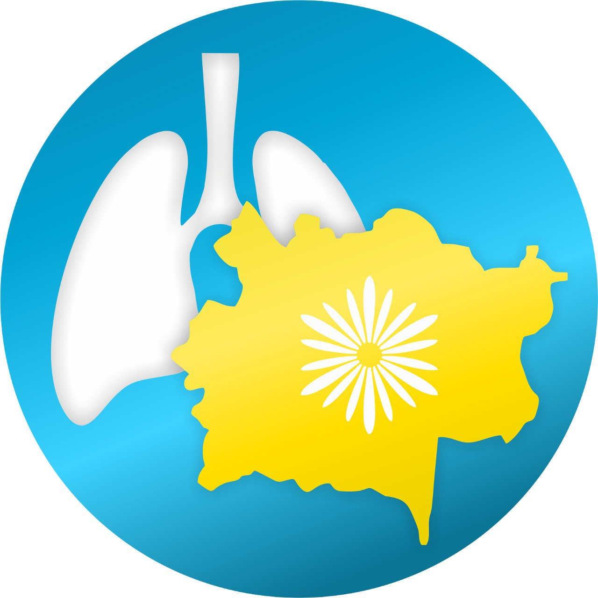

<link rel="stylesheet" href="styles.css">
<link rel="stylesheet" href="https://cdnjs.cloudflare.com/ajax/libs/font-awesome/6.1.1/css/all.min.css">
 <!-- Подключаем иконку (favicon) -->
 <link rel="icon" href="assets/images/LOGO.jpg" type="image/x-icon">
 <link rel="shortcut icon" href="assets/images/LOGO.jpg" type="image/x-icon"> <!-- Для некоторых браузеров -->
 <script src="https://cdn.jsdelivr.net/npm/js-cookie@2/src/js.cookie.min.js"></script>
 <script src="/js/google-translate.js"></script>
 <script src="//translate.google.com/translate_a/element.js?cb=TranslateInit"></script>
 <style>
/* Set original colors for icons */
.social-icon .fa-instagram {
    color: #E4405F !important; /* Instagram brand color */
}

.social-icon .fa-facebook {
    color: #1877F2 !important; /* Facebook brand color */
}

/* Hover effect */
.social-icon:hover i {
    color: #FFD700 !important; /* Yellow color on hover */
    transition: color 0.3s ease; /* Smooth transition effect */
}


</style>
<header>
    <div class="top-header">
        <div class="container">
            <div class="logo-info">
                <div class="logo">
                    
                </div>
                <div class="center-info">
                    <h1>ШЖҚ КМК Шығыс Қазақстан облыстық фтизилпульмонологиялық орталығы</h1>
                </div>
                </div>
            
 
    <!-- Социальные ссылки справа -->
    <div class="social-links">
        <div class="button-container">
            <a href="contacts_kk.html" class="btn">Байланыс</a>
        </div>
        <a href="https://www.instagram.com/fpcvko?igsh=ZWdjYTNvYmplaW9w" target="_blank" class="social-icon">
            <i class="fab fa-instagram" style="color: #E4405F;"></i>
        </a>
        <a href="https://www.facebook.com/profile.php?id=100022738894869&mibextid=LQQJ4d" target="_blank" class="social-icon">
            <i class="fab fa-facebook" style="color: #1877F2;"></i>
        </a>
    </div>
</div>
</div>

        <div class="bottom-header">
   <!-- Иконка гамбургера для мобильной версии -->
   <div class="hamburger" onclick="toggleMobileMenu()">&#9776;</div>
  
        <nav class="nav-menu-container" >
            <div class="close-menu" onclick="toggleMobileMenu()">&times;</div>

            <ul class="nav-menu">
                <li><a href="index_kk.html">Басты бет</a></li>
                <li class="has-dropdown">
                    <a href="about.html"onclick="toggleSubmenu(event)">Біз туралы</a>
                    <ul class="dropdown">
                        <li><a href="mission_kk.html">Миссия</a></li>
                        <li><a href="history_kk.html">Тарих</a></li>
                        <li class="has-dropdown">
                            <a href="#" onclick="toggleNestedSubmenu(event)">Орталықтың құрылымы</a>
                            <ul class="dropdown1">
                                <li><a href="administration_kk.html">Басшылық</a></li>
                                <li><a href="structura_kk.html">Ұйымдық құрылым</a></li>
                            </ul>
                        </li>
                                                
                        <li><a href="reports_kk.html">Есептер</a></li>
                        <li><a href="corporate-documents_kk.html">Корпоративтік құжаттар</a></li>
                        <li><a href="strategic-plan_kk.html">Стратегиялық жоспар</a></li>
                        <li><a href="supervisory-board_kk.html">Бақылау кеңесі</a></li>
                        <li><a href="vacancies_kk.html">Бос жұмыс орындары</a></li>
                        <li><a href="contacts_kk.html">Байланыс</a></li>
                    </ul>
                </li>
                    <li class="has-dropdown">
                        <a href="departments.html" onclick="toggleSubmenu(event)">Бөлімшелер</a>
                        <ul class="dropdown">
                            <li><a href="department1_kk.html">Өкпе хирургиясы, өкпеден тыс туберкулез және қалпына келтіру емі бөлімшесі</a></li>
                            <li><a href="department2_kk.html">Терапия және қалпына келтіру емдеу бөлімшесі </a></li>
                            <li><a href="department3_kk.html">Тарбағатай  ауданы Ақжар ауылының бөлімі</a></li>
                            <li><a href="department4_kk.html">Консультативтік-диагностикалық бөлімше</a></li>
                            <li><a href="department5_kk.html">Туберкулезге қарсы іс-шараларды мониторингтеу және бағалау тобы </a></li>
                            <li><a href="department8_kk.html">Ахуал орталығы </a></li>
                            <li><a href="department6_kk.html">Ұйымдастыру-әдістемелік бөлімі </a></li>
                            <li><a href="department7_kk.html">Ауруханаішілік дәріхана</a></li>
              
                        </ul>
                    </li>

                    <li class="has-dropdown">
                        <a href="services.html"onclick="toggleSubmenu(event)">Қызметтер</a>
                        <ul class="dropdown">
                        <li><a href="consult_kk.html">Консультациялық-диагностикалық қызметтер</a></li>
                        <li><a href="price_kk.html">Ақылы қызметтер тізімдемесі</a></li>
                    </ul>
                </li>

                    <li class="has-dropdown">
                        <a href="patients.html"onclick="toggleSubmenu(event)">Науқасқа</a>
                        <ul class="dropdown">
                        <li><a href="route_kk.html">Туберкулезге күдікті пациенттің бағыты </a></li>
                        <li><a href="hospital_kk.html">Ауруханаға жатқызу ережелері</a></li>
                        <li><a href="order_kk.html">Туберкулезбен ауыратын науқасқа жадынама</a></li>
                        <li><a href="quality_kk.html">Медициналық қызметтердің сапасын және пациенттердің қауіпсіздігін бақылау қызметі</a></li>
                        <li><a href="tuberkulez_kk.html">Туберкулез туралы барлығы</a></li>
                        <li><a href="memo_kk.html">Ішкі тәртіп ережелері </a></li>
                        <li><a href="questions_kk.html">Жиі қойылатын сұрақтар</a></li>
                        <li><a href="oneimpact_kk.html">OneImpact Kazakhstan мобильді қосымшасы </a></li>
                        <li><a href="phone_kk.html">Уәкілетті органдардың байланыстары</a></li>
                    </ul>
                    </li>
                    <li><a href="news_kk.html">Жаңалықтар</a></li>
                <li class="has-dropdown">
                    <a href="corruption.html"onclick="toggleSubmenu(event)">Сыбайлас жемқорлыққа қарсы іс-қимыл</a>
                    <ul class="dropdown">
                        <li><a href="general_kk.html">Сыбайлас жемқорлыққа қарсы корпоративтік құжаттар</a></li>
                        <li><a href="politic_kk.html">Сыбайлас жемқорлыққа қарсы саясат </a></li>
                        <li><a href="news_cor_kk.html">Жаңалықтар</a></li>
                        <li><a href="spravki_kk.html">Сыбайлас жемқорлық тәуекелдерін ішкі талдау қорытындылары бойынша анықтамалар</a></li>
                    </ul>
                </li>
                <li><a href="custom_kk.html">Мемлекеттік сатып алу</a></li>
                <li><a href="osms_kk.html">МӘМС</a></li>

            </ul>
        </nav>
        
        <div class="header-extras">
            <div class="language-switcher">
                <a href="index.html" class="current-language" id="rus-link">Рус</a> | 
                <a href="index_kk.html" id="kaz-link">Қаз</a>
            </div>
        </div>
        
        </div>
        <script src="script_kk.js"></script>
</header>